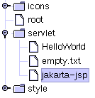
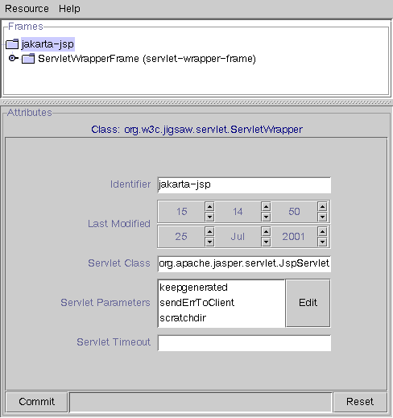

JavaServer Pages (JSP) are supported in Jigsaw, by using one of the JSP Engines availables. We describe here how to configure Jigsaw to use those engines
First of all, download your favorite JSP Engine (see the links on the left) and read its installation procedure. You will probably have to update your CLASSPATH. Please check it before going to the next step and don't forget to restart Jigsaw after modifying the CLASSPATH.
Now, configure the JSP Engine servlet, you'll probably need to configure some parameters. For more details on servlet installation read the servlet documentation, and the documentation of your JSP engine.
The next thing to do is to map jsp files to the JSP servlet, a request coming on a jsp file will be redirected to the JSP Servlet. For that we use a ServletMapperFrame.
Now setup the indexer (eg: the default indexer). Under the "extensions" node add the "jsp" extension using a FileResource associated to a ServletMapperFrame. Then, in the ServletMapperFrame, set the "servlet-url" field to the JSP Servlet URI (eg: /servlet/jsp). (Note, this will work with Jigsaw 2.0.2 and up)
Don't forget to save the configuration, and enjoy JSP!
For more informations about JSP, here is a JSP Syntax Reference.
Here is a step-by-step tutorial for Jakarta-Tomcat 3.2.3
In the jakarta-tomcat "lib" directory, you will find servlet.jar, jasper.jar and webserver.jar, add those jars to Jigsaw's CLASSPATH, You should also add tools.jar, located in the "lib" directory of your jdk distribution (jdk must be at least 1.2). Here is an example for UNIX:
JAKARTA_HOME=/u/tarantula/0/w3c/ylafon/Jars/jakarta-tomcat
CLASSPATH=${JAKARTA_HOME}/lib/webserver.jar:\
${JAKARTA_HOME}/lib/servlet.jar:\
${JAKARTA_HOME}/lib/jasper.jar:\
${JIGSAW_HOME}/classes/jigsaw.jar:\
/usr/java1.2/lib/tools.jar
Note that you can remove the servlet.jar provided in the distribution, as it is provided by Jakarta-Tomcat.
Now you can start your server and create the jsp engine servlet. For this example its name will be "jakarta-jsp" but it could be "jspengine" or whatever you want. The class for the Jsp engine in 3.2.3 is "org.apache.jasper.servlet.JspServlet", the following servlet parameters are set:
If you know better defaults, please use them, and send them, so that we can fix this page. Here is what it should look like:
 Now it is time to add the jsp extension in the default indexer, using a FileResource and a ServletMapper frame as explained above. Here is what it should look like: